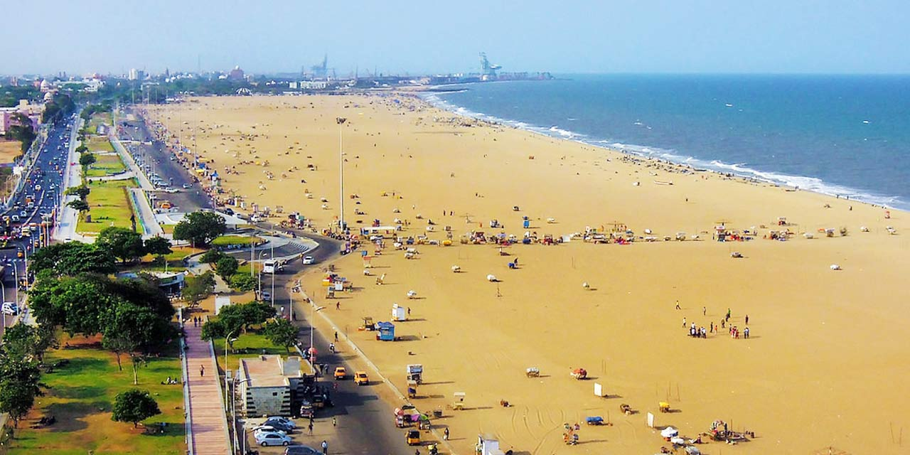
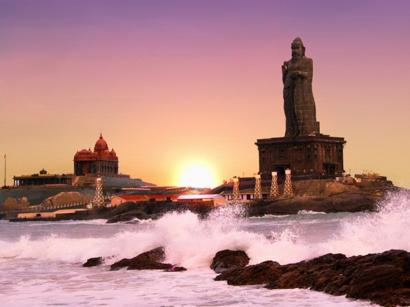

Explore the Land of Temples, Tradition, and Timeless Beauty
Tamil Nadu is one of the most culturally rich and historically significant states in India. Located in the
southern part of the country, it is famous for its ancient temples, classical arts, scenic landscapes, and
vibrant traditions. Tamil Nadu tourism attracts millions of visitors every year by offering a perfect blend
of spirituality, heritage, and natural beauty.
Overview of Tamil Nadu Tourism
Tamil Nadu is a leading tourist destination in India due to its rich cultural heritage, historical monuments,
and natural attractions. The state is home to thousands of temples, ancient cities, hill stations, beaches,
and wildlife sanctuaries, making it suitable for all types of travelers.
Tourism in Tamil Nadu includes religious tourism, heritage tourism, eco-tourism, and cultural tourism. From
busy metropolitan cities to peaceful rural landscapes, the state offers diverse experiences that reflect its
deep-rooted traditions and modern development.
Tamil Nadu tourism offers a perfect combination of history, architecture, culture, and scenic landscapes.
Tourists visiting the state can explore famous destinations such as Ooty, Kodaikanal, Chennai, Madurai,
Rameswaram, and Kanyakumari. These places are known for their unique attractions including tea plantations,
waterfalls, temples, beaches, mountains, and historical sites. see more..
Culture and heritage
Tamil Nadu has one of the oldest living cultures in the world. The Tamil language is one of the longest
surviving classical languages and plays a major role in shaping the cultural identity of the state.
Tamil literature, music, and traditional art forms have been preserved for generations.
The state is famous for Bharatanatyam, a classical dance form known for its grace and expressive
storytelling. Dravidian-style temples with towering gopurams and detailed sculptures represent the
artistic excellence of ancient Tamil civilization.
The state is also well known for its cultural heritage. Bharatanatyam dance, Carnatic music, temple
festivals, silk sarees, and traditional art forms reflect the rich traditions of Tamil Nadu. Festivals
such as Pongal are celebrated with great enthusiasm and attract visitors from different parts of the
country.
Major Tourist Destinations
Tamil Nadu offers a wide range of tourist destinations suitable for different interests. Hill stations
such as Ooty and Kodaikanal are known for their cool climate, scenic beauty, and tea plantations, making
them popular summer destinations.
The state also has important pilgrimage centers like Madurai, Rameswaram, and Kanchipuram. Coastal towns
such as Chennai and Kanyakumari attract visitors with their beaches and cultural landmarks. Wildlife
sanctuaries and national parks promote eco-tourism.
Ooty is also famous for homemade chocolates, eucalyptus oil, and fresh tea products. The pleasant weather
throughout the year makes it a perfect destination for families, honeymoon couples, and nature lovers.
The best time to visit Ooty is from October to June when the climate is cool and enjoyable.
Economic and Social Impact of Tourism

Tourism plays a major role in the economic development of Tamil Nadu. It generates employment
opportunities in hospitality, transportation, travel services, handicrafts, and local businesses. Many
rural and coastal communities depend on tourism for their livelihood.
Tourism also helps preserve cultural traditions and promotes regional development. Government initiatives
and infrastructure improvements have supported sustainable tourism while protecting cultural heritage
and natural resources.
Tamil Nadu Tourism Statistics
Tamil Nadu consistently ranks among the top states in India in terms of tourist arrivals. The state receives
millions of domestic and international visitors every year. Festivals, temple events, and holiday seasons
greatly influence tourism trends.
Popular Tourist Places
Destination
Type
Famous For
Madurai
Heritage City
Meenakshi Amman Temple
Ooty
Hill station
Tea gardens and climate
Rameswaram
pilgrimage
Ramanathasamy Temple
FAQ's
What are the best tourist places to visit in Tamil Nadu?
Some of the most popular tourist places in Tamil Nadu include Madurai, Ooty, Kodaikanal, Rameswaram,
Kanyakumari, Chennai, and Thanjavur. Each destination offers unique attractions such as temples,
hill views, beaches, or historical sites.
When is the best time to visit Tamil Nadu?
The best time to visit Tamil Nadu is from October to March when the weather is pleasant and suitable
for sightseeing. This period is ideal for visiting temples, hill stations, and coastal areas
How does tourism benefit Tamil Nadu’s economy?
Tourism contributes significantly to Tamil Nadu’s economy by generating employment, supporting local
businesses, promoting handicrafts, and improving infrastructure. It also helps in regional
development and cultural preservation.
Conclusion

Tamil Nadu tourism offers a complete travel experience combining culture, history, spirituality, and natural
beauty. With its rich heritage, welcoming people, and diverse attractions, Tamil Nadu continues to be one of
the most important and attractive tourism destinations in India.


Economic and Social Impact of Tourism

Tourism plays a major role in the economic development of Tamil Nadu. It generates employment opportunities in hospitality, transportation, travel services, handicrafts, and local businesses. Many rural and coastal communities depend on tourism for their livelihood.
Tourism also helps preserve cultural traditions and promotes regional development. Government initiatives and infrastructure improvements have supported sustainable tourism while protecting cultural heritage and natural resources.